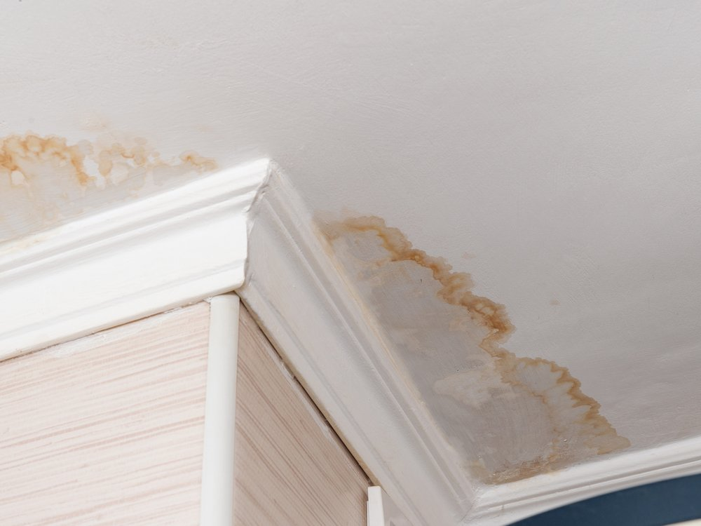
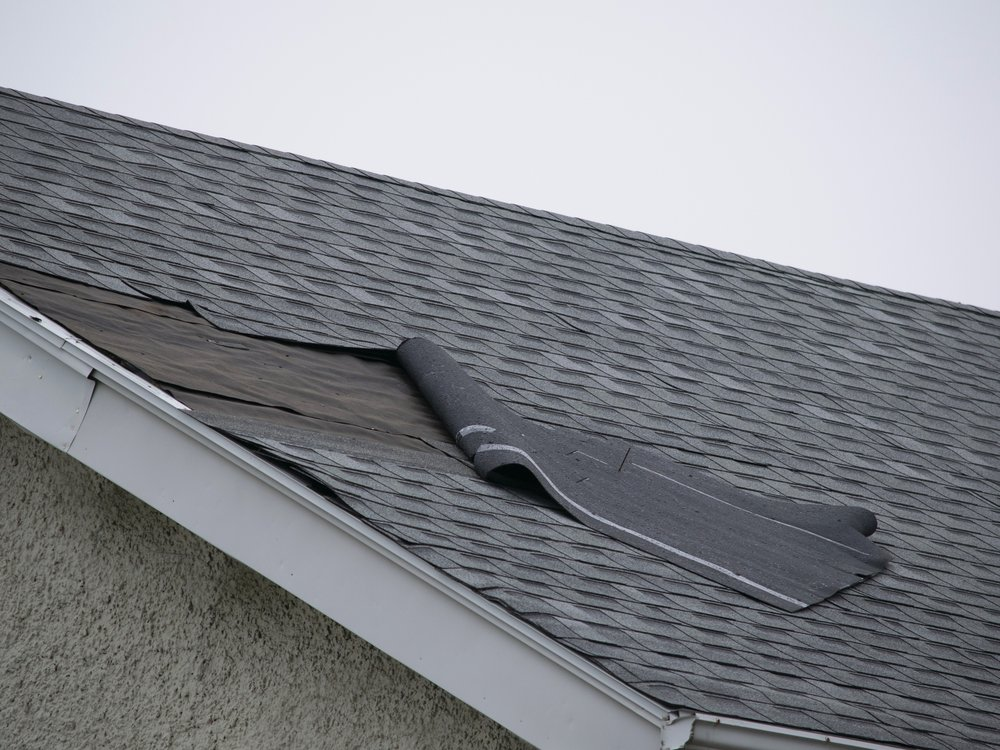
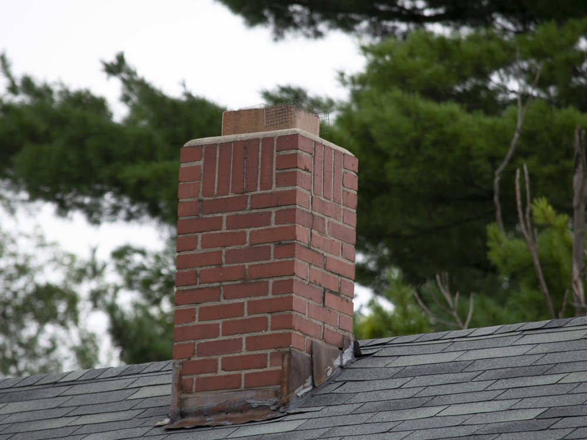
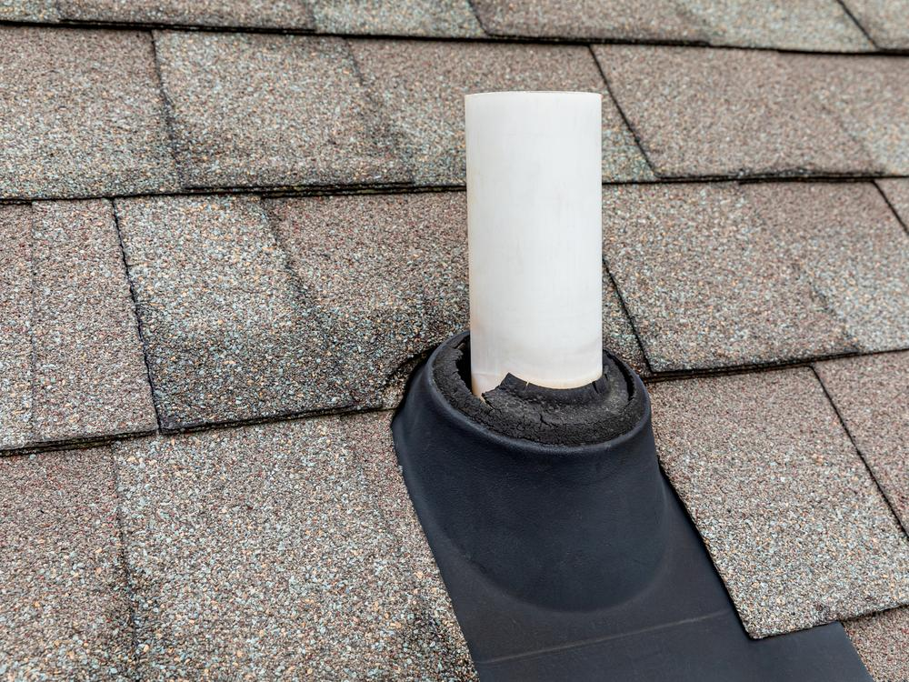
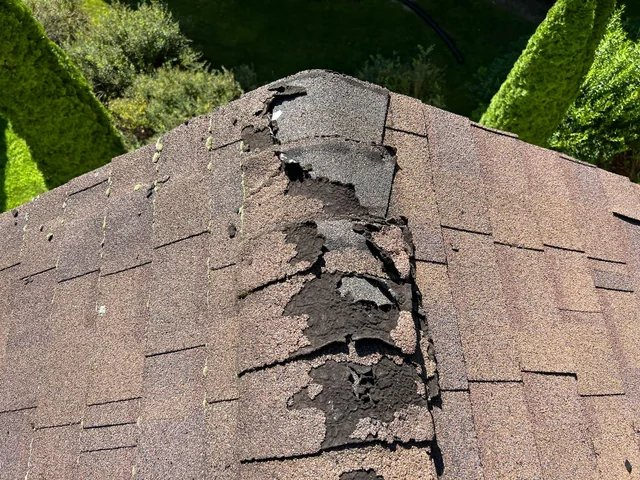
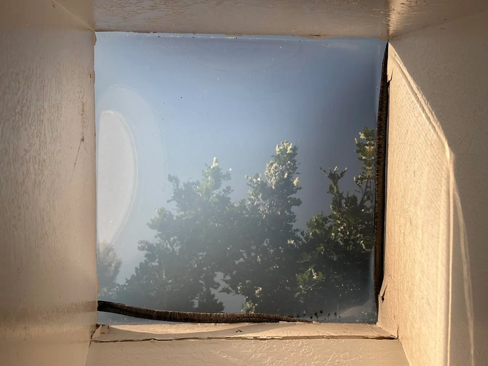
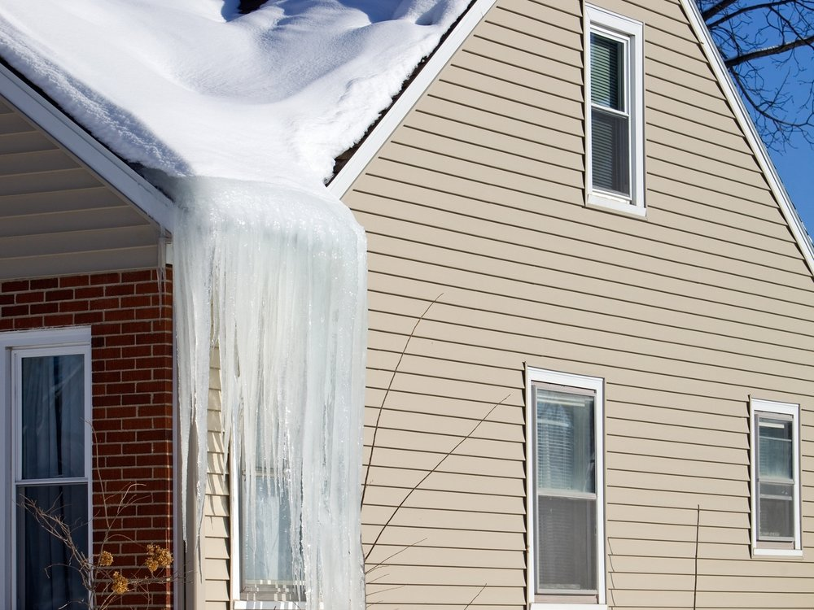
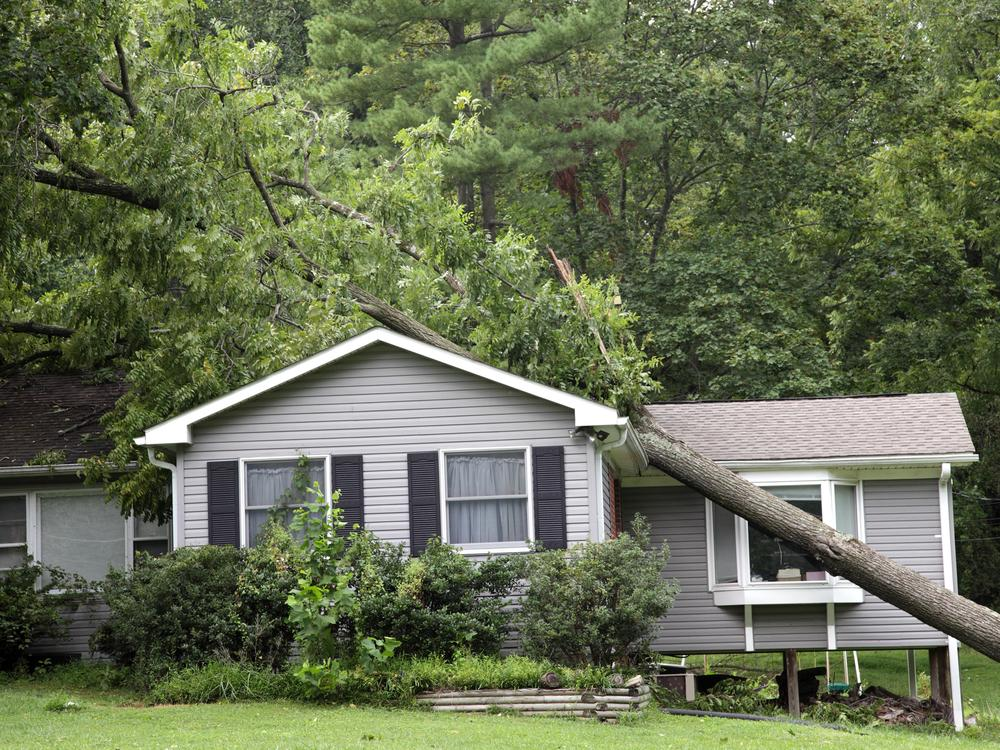
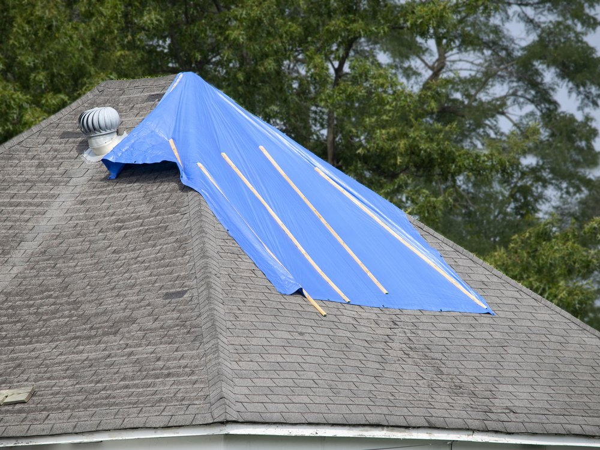

A stain on the ceiling almost never sits directly below the hole. Water enters at a failed detail, runs along a rafter or the top of the sheathing, and shows up somewhere else entirely. That is why so many roof repairs fail twice: the first contractor patched the spot under the stain, the homeowner paid, and the leak came back with the next wind-driven rain.
Forthright repairs start with diagnosis. We trace the water path, find the entry point, and tell you what is actually wrong, whether that is a fifteen minute fix or a sign your roof is at the end of its service life. Then you get a fixed price in writing before anyone touches a shingle.
Active leak right now?
If water is coming into your home today, call. Do not wait for a form response. We will talk through what to do to limit interior damage before we get there, and we can tarp an active entry point to stop the bleeding while a permanent repair gets scheduled.
What We Repair
Most Vermont roof failures are not the field of the roof. They are the transitions: where the roof meets a wall, a chimney, a pipe, a skylight, or the edge. Those are the details that move with freeze-thaw and the details that get skipped on a fast install.

Leak Diagnosis & Repair
We trace the water path from the interior stain back to the actual entry point on the roof, rather than patching whatever is nearest overhead.

Missing & Damaged Shingles
Wind lifts tabs and breaks the seal strip long before shingles blow off. We replace what is gone and check the surrounding field for shingles that are loose but still in place.

Chimney & Wall Flashing
Failed step flashing and counter flashing are the single most common source of chronic leaks. We reflash properly instead of running a bead of caulk over the problem.

Pipe Boot Replacement
Rubber boots crack and split years before the shingles around them wear out. This is one of the cheapest repairs there is and one of the most common causes of a surprise leak.

Ridge Cap & Ridge Vent
The ridge takes the most wind exposure on the roof. We replace failed cap shingles and check that the ridge vent underneath is still doing its job.

Skylight Leaks
Skylights leak at the flashing far more often than at the glass. We reflash the curb, and if the unit itself has failed seals we tell you that instead of chasing it.

Ice Dam Damage
We repair the leak points ice dams create at the eave and, just as important, tell you whether ventilation or insulation is the underlying cause so it stops happening every February.

Storm & Impact Damage
Fallen limbs, hail bruising, and wind uplift. We document what we find with photographs so you have evidence if you decide to file a claim.

Emergency Tarping
A temporary measure that buys time and stops interior damage while a permanent repair or a replacement gets scheduled and priced properly.

Repair or Replace
This is the question behind almost every repair call, and it is the one where a contractor has the most room to take advantage of you. Here is the framework we use, and we will apply it out loud in front of you at the visit:
- Under 10 years old, isolated damage - repair. A storm event or a single failed detail on a young roof is exactly what repair is for.
- 10 to 15 years old, one or two problem areas - usually repair, with a straight conversation about what the rest of the roof looks like so the timing is not a surprise later.
- 15 to 20 years old, widespread granule loss or multiple failed flashings - replacement is usually more cost-effective than continued repair, because you will be paying for access and setup again in a year.
- Over 20 years on standard architectural shingles - start planning replacement regardless of current condition. We will still repair it to get you through a season if that is what the budget requires, and we will say so plainly.
If a repair is the right answer, we will tell you it is the right answer. We would rather do a small job correctly and be the call you make in five years than sell you a roof you did not need yet. If replacement is the right answer, see Vermont residential roofing for systems and pricing.
How a Repair Visit Works
- You call or submit - tell us what you are seeing and where. Photos of the interior stain help more than you would think.
- We diagnose on site - roof, attic where accessible, and the interior. We are looking for the entry point, not the symptom.
- You get a fixed price - in writing, with photos of what we found and what we propose to do about it. No pressure, no expiring discount.
- We repair and document - photos of the completed work, cleanup with a magnet sweep, and a clear record of what was done.
If we open up the repair and find the problem is larger than what we quoted, we stop and talk to you before spending more of your money. That is the whole point of Accountable By Design: the surprise gets surfaced, not buried in a final invoice.
Vermont Roof Repair - FAQ
Under 10 years old with isolated damage, repair is usually the right answer. At 15 to 20 years old with widespread granule loss, multiple failed flashings, or recurring leak points, replacement is almost always more cost-effective than continued repair. Over 20 years old on standard architectural shingles, start planning for replacement regardless of current condition. We give you a straight assessment at the visit, not a sales pitch for replacement when a repair is adequate.
Repair cost is driven by four things: how much roof surface is involved, how hard the area is to reach safely, whether the deck underneath is wet or rotted, and whether the failure is a single point or a symptom of a roof at the end of its life. We diagnose first, then give you a fixed price in writing before any work starts. If we open it up and find the problem is bigger than what we quoted, we stop and talk to you before spending your money.
Yes. Most of the repairs we do are on roofs we did not install. We will tell you plainly what we find, including whether the original installation is the cause, and what your realistic options are.
Intermittent leaks are usually about direction and duration rather than rainfall alone. Wind-driven rain from one direction pushes water under shingle edges and behind flashing that sheds fine in a straight downpour. Ice dams back water uphill under the shingle course during a thaw, then stop when it refreezes. Condensation from an under-ventilated attic looks exactly like a leak but has nothing to do with rain at all. The stain on your ceiling is often several feet from the entry point, which is why we trace the path.
Insurance typically covers sudden damage from a specific event such as wind, hail, or a fallen limb. It typically does not cover wear, age, or deferred maintenance, and that distinction is where most claims are won or lost. We photograph and document what we find so you have evidence to file, but we are not going to tell you what your policy covers. That is between you and your carrier.